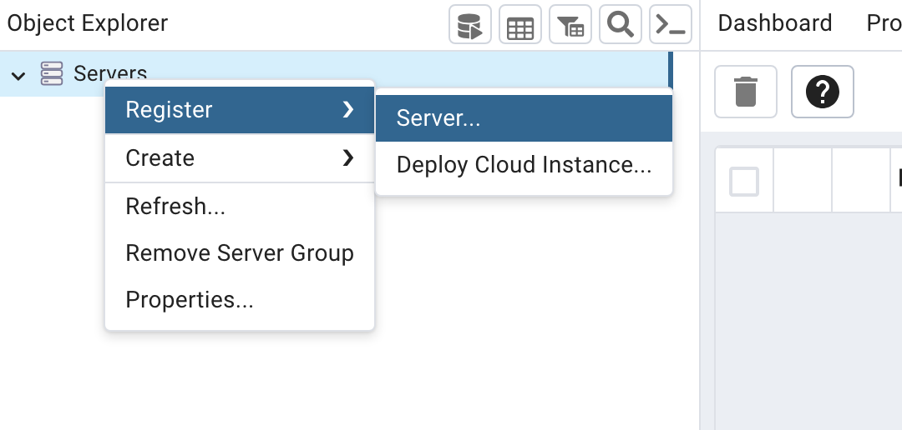
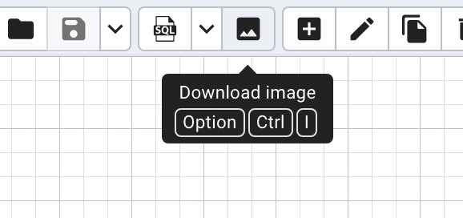
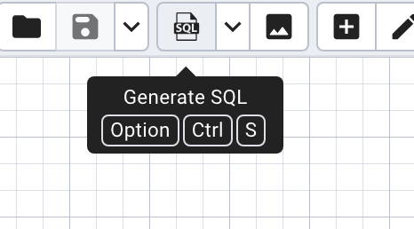

01 What is this assignment about?
We discussed how important it is to draw ERDs for database planning. These ERDs can be designed using two modes:
- Forward Engineering
- Reverse engineering
This lab requires you to use both modes to generate ERDs for a food delivery app (like Deliveroo/JustEat). The ERD should include:
Entities:
- Customer (CustomerID, CustomerName, Address, Phone)
- Restaurant (RestaurantID, RestaurantName, Cuisine, Location)
- MenuItem (ItemID, RestaurantID, ItemName, Price, Category)
- Order (OrderID, CustomerID, Date, TotalAmount)
- OrderItem (OrderID, ItemID, Quantity)
Relationships:
- One customer places multiple orders (1:N)
- A restaurant gets multiple orders (1:N)
- A restaurant offers multiple menu items (1:N)
- Order contains order items (1:N)
- One menu item is present in multiple order items (1:N)
You must submit:
- The ERD generated by Forward Engineering
- The ERD generated by Reverse Engineering
- The SQL generated from the ERD diagram
02 Forward Engineering
Forward Engineering is the process of designing a database from scratch.
Create an ERD using forward engineering using the pgAdmin software. This software can be downloaded for free at the following link:
https://www.pgadmin.org/docs/pgadmin4/development/erd_tool.html
You also have access to pgAdmin in the lab computer.
Follow the steps below to create an ERD in pgAdmin:
Step 1: Open pgAdmin and right-click Servers -> Register -> Server

Step 2: A new window will open. In the “Name” field, type “databases1”. In the tab “Connection” change the Host name/address to “localhost”. Click on “Save”.
Step 3: On the left menu, drop-down "databases1", select a database and click on the arrow beside it to drop down the menu. Find "Schemas", right-click and create a schema called "FoodApp". Select the schema you created. On the upper menu, click on “Tools” and on “ERD Tool” to start drawing the diagram.
Step 4: Click on the plus sign and start creating the tables (Customer, Restaurant, MenuItem, Order). Each table should have a name, and be allocated to the public schema. Columns should be named and have constraints allocated according to the food delivery app case study.
Step 5: Click on the download button to save the diagram as a PNG file.

Step 6: Now, click the SQL button to generate and save the resulting SQL code from that diagram. This code will slightly differ from what you might have seen as it adds constraints using ALTER TABLE statements.

03 Reverse Engineering
Now, we will create the same diagram but using SQL code instead.
The reverse process of creating an ERD from an existing database system that lacks formal documentation.
Create an ERD using reverse engineering through DBeaver, following the steps below:
Step 1: Open DBeaver and connect it to the PostgreSQL server.
Step 2: On the left, find the schema you created through pgAdmin.
Step 3: Right-click the schema -> "SQL Editor" -> "New SQL Script".
Step 4: Paste the SQL code you generated from the ERD you created in pgAdmin. Run the whole script.
Step 5: Go to the menu on the left side, find the schema you are using, right-click on "Tables" and click on "Refresh". You should see the tables you just created.
Step 6: Right-click "Tables", then click on "View Diagram". If the entities overlap, right-click on the diagram window and select “Arrange diagram”.
Step 7: Right-click on the diagram window and click “Save diagram as”. Select PNG as the image format.